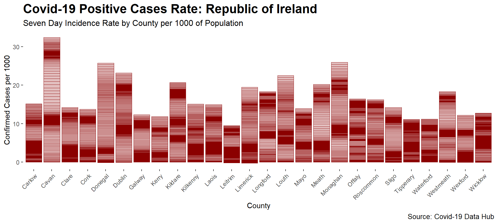

Animated Coivd Graphs
Although it was a bad year for the world, 2020 was a great year for data visualisation with visualisations of both Covid-19 and US Election inescapable. Some great examples can be seen here and here
R provides a very flexible way to create animated plots using a combination of the ggplot2 and the gganimate package.
The following animated plots leverage data from the Covid19 Data Hub to created animated visualisations of the Covid-19 incidence rates in Ireland.
The first plots visualise the time series for the number of cases in the Republic if Ireland over 2020 while the second tracks the 7 day incidence rate on a per county basis.


Although the code to generate the plots looks complex, it’s actually relatively straight forward to animate them - the real work is in summarizing the data and laying out the plots in the correct format.
Loading Requried packages
The following packages are loaded:
library(COVID19)
library(ggplot2)
library(tidyverse)
library(rgeos)
library(maptools)
library(rgdal)
library(gganimate)
library(sf)
library(zoo)Animated Line Graph
Importing Covid Data
The following code imports the Covid-19 dataset for Ireland on a country level basis (level=1 option). In addition to importing the data, I’ve added code to include some additional metrics :
- The daily number of confirmed cases (the dataset provides the cumulative cases)
- The number of confirmed cases per 1,000 people
- The rolling seven day average for the number of confirmed cases
Once the required data fields have been added, I have removed unnecessary fields from the data source. This is an optional step, but having a smaller dataframe will decrease the processing time required to create the animated plot.
ire_agg <- covid19(country='IE',
level=1,
start='2020-02-22',
end='2020-12-31',
raw=FALSE,
verbose=FALSE)
# A new column to calculate daily delta in confirmed cases
ire_agg %<>%
arrange(id, date) %>%
group_by(id) %>%
dplyr::mutate(confirmed_delta = confirmed - lag(confirmed, default = first(confirmed)))
# Calculating the rolling 7 day average
ire_agg %<>%
group_by(id) %>%
arrange(date) %>%
dplyr::mutate(confirmed_7day = zoo::rollmean(confirmed_delta, k = 7, fill = NA, align='right')) %>%
dplyr::ungroup()
# calculating cases per 1000 population
ire_agg$cases_per_1000 <- 1000 * (ire_agg$confirmed_delta / ire_agg$population)
ire_agg$confirmed_7day_per_1000 <- 1000 * (ire_agg$confirmed_7day / ire_agg$population)
# dropping unnecessary columns
drops <- c("vaccines","tests", "recovered", "deaths", "hosp", "vent", "icu", "school_closing",
"workplace_closing", "cancel_events", "gatherings_restrictions", "transport_closing",
"stay_home_restrictions", "internal_movement_restrictions", "international_movement_restrictions",
"information_campaigns", "testing_policy", "contact_tracing",
"stringency_index", "iso_alpha_3", "iso_alpha_2", "iso_numeric",
"currency", "administrative_area_level", "administrative_area_level_3", "latitude",
"longitude", "key", "key_google_mobility", "key_apple_mobility", "key_numeric", "key_alpha_2" )
ire_agg <- ire_agg[ , !(names(ire_agg) %in% drops)]Once, we have created the base data, the following code produces the plot that will form the basis of the visualisation:
line_plot <- ire_agg %>%
ggplot(aes(x=date, y=confirmed_delta)) +
geom_line(color='red4', size=0.8) +
geom_point(size = 1, color='red4') +
theme(legend.position="bottom", plot.margin=margin(5.5, 60, 5.5, 5.5)) + #increasing margin
scale_color_viridis_d(name="Method of Discovery") +
labs(title = "Number of Positive Cases by Day") +
ylab("Number of Daily Cases") +
xlab("Date")
# Viewing the plot
line_plotThe following code then takes the base plot and animates it over time. In order to animate the plot the gganimate package is used. The code transition_reveal(date) tells R to use the date field as the basis of our plot animation.
line_plot_animation <- animate(line_plot + transition_reveal(date),
renderer = gifski_renderer(loop = T),
height=350,
width=700)
# Saving the plot output
anim_save("line_plot_animation.gif", line_plot_animation)
County Level Data
The Covid-19 dataset also contains county level data administrative_area_level_2 data field. This can be downloaded from the Covid-19 Data Hub by usng the level=2 argument:
ire_byregion <- covid19(country='IE',
level=2,
start='2020-02-22',
end='2020-12-31',
raw=FALSE,
verbose=FALSE)
# A new column region is added to the dataset in order to allow mapping by region
ire_byregion$region <- ire_byregion$administrative_area_level_2
# A new column to calculate daily delta in confirmed cases
ire_byregion %<>%
arrange(region, date) %>%
group_by(region) %>%
dplyr::mutate(confirmed_delta = confirmed - lag(confirmed, default = first(confirmed)))
# Calculating the rolling 7 day average
ire_byregion %<>%
group_by(region) %>%
arrange(date) %>%
dplyr::mutate(confirmed_7day = zoo::rollmean(confirmed_delta, k = 7, fill = NA, align='right')) %>%
dplyr::ungroup()
# calculating cases per 1000 population
ire_byregion$cases_per_1000 <- 1000 * (ire_byregion$confirmed_delta / ire_byregion$population)
ire_byregion$confirmed_7day_per_1000 <- 1000 * (ire_byregion$confirmed_7day / ire_byregion$population)
# dropping unnecessary columns
drops <- c("vaccines","tests", "recovered", "deaths", "hosp", "vent", "icu", "school_closing",
"workplace_closing", "cancel_events", "gatherings_restrictions", "transport_closing",
"stay_home_restrictions", "internal_movement_restrictions", "international_movement_restrictions",
"information_campaigns", "testing_policy", "contact_tracing",
"stringency_index", "iso_alpha_3", "iso_alpha_2", "iso_numeric",
"currency", "administrative_area_level", "administrative_area_level_3", "latitude",
"longitude", "key", "key_google_mobility", "key_apple_mobility", "key_numeric", "key_alpha_2" )
ire_byregion <- ire_byregion[ , !(names(ire_byregion) %in% drops)]Using the data, the county level information can be plotted as follows, using the viridis color scale:
county_barplot <- ggplot(drop_na(ire_byregion), aes(x=region, y=confirmed_7day_per_1000, fill=region)) +
geom_bar(stat="identity") +
scale_fill_viridis_d(alpha=0.75) +
theme(legend.position = "none") + # hiding the legend
theme(axis.text.x = element_text(angle = 45, hjust = 1)) + #rotating the labels
labs(title='Seven Day Incidence Rate by County per 1000 of Population') +
xlab('County') + ylab('Confirmed Cases per 1000')
county_barplot
Finally, the barplot can be animated using the transition_states function. The ease_aes defines how the bars will move between each of the states:
county_barplot_animation <- animate(county_barplot +
transition_states(date ,transition_length = 1,state_length = 0) +
ease_aes('sine-in-out') +
labs(subtitle = "Date: {closest_state}"),
renderer = gifski_renderer(loop = T),
height=400,
width=1000,
nframes = 350)
# Saving the plot output
anim_save("county_barplot_animation.gif", county_barplot_animation)
Animated Plot by County
The animated plot is a little more tricky as we need to import both data on the Covid-19 incidence rate on a per county basis as well as creating a map of Ireland with county borders. In order to create the county borders we need to import shape files that mark the shape of each county for plotting on our map.
Creating the shapefiles for Plotting
In order to visualise the incidence rate by county, we first need to import county ‘shapefiles’ that we can plot. Once these are imported and plotted, it’s a relatively straightforward process to link them to the Covid data and to visualise the incidence rate by county.
spdf <- readOGR(file.path(path,"./data"), layer = "counties", verbose=FALSE)
spdf@data$id <- rownames(spdf@data)
county_ids <- as.data.frame(cbind(id = spdf@data$id, region = spdf@data$NAME_TAG))
spdf <- gSimplify(spdf, tol=0.01, topologyPreserve = TRUE)
spdf.df <- fortify(spdf)
spdf.df <- inner_join(spdf.df, county_ids, by="id")Merging the Shapefile with Covid Data
spdf.df <- inner_join(spdf.df, ire_byregion, by="region")
# dropping unnecessary columns
drops <- c("hole", "piece", "id.x", "id.y")
ire_byregion <- ire_byregion[ , !(names(ire_byregion) %in% drops)]Plot Shapefile data
Once the shapefile is imported we can plot it using ggplot. The following code produces the plot prior to animation:
baselayer <- spdf.df %>%
# filter(date >= '2020-12-01') %>%
tidyr::drop_na() %>%
ggplot(.) +
aes(long, lat, group=group) +
geom_polygon(colour="grey")
plot <- baselayer +
aes(fill=(confirmed_7day_per_1000)) +
labs(x=NULL, y=NULL) +
coord_map("gilbert") +
scale_fill_distiller(palette = 'YlOrRd', direction=1, guide='colorbar') +
guides(fill = guide_colourbar(title='Cases per 1000', barwidth = 0.5, barheight = 10)) +
theme(panel.border = element_blank(),
panel.background = element_blank(),
axis.ticks = element_blank(),
axis.text = element_blank()) +
labs(title="Number of New Daily Cases - 7 Day Rolling Average")
plotAnimating the Choropleth
Finally, we can animate the choropleth with the following code:
anim <- plot + transition_time(date) + labs(subtitle = "Date: {frame_time}")
plot_output <- animate(anim, nframes = 200, renderer = gifski_renderer(loop = T))
anim_save("choropleth_covid_ire.gif", plot_output)